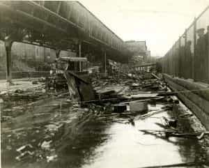

Quintus can be found at qcurtius.com. He is the author of the books On Duties, Thirty Seven, Sallust: The Conspiracy Of Catiline And The War Of Jugurtha, and other books. His work has been reviewed at Taki's Magazine. He can be followed on Twitter


Molasses has been an important commodity for much of American history. Besides its use in candy and confections, it is also distilled into alcohol. But even apparently harmless substances can cause tremendous damage in the right circumstances; and this point was compellingly made in 1919 when a huge tank of molasses exploded in Boston’s North End. The disaster is little-known today outside of New England, but the lesson is clear: even seemingly “harmless” substances must be treated with the care they deserve.
A company called the United States Industrial Alcohol Company owned a huge molasses tank in the North End that stood 52 feet high and had a diameter of 91 feet. The tank contained about 2.3 million gallons of dark, raw molasses. The month of January 1919 had been an unusually mild one, and local residents were hopeful that the rest of the winter months would be about the same. The weather was so good, in fact, that people were able to venture outdoors without having to wear coats for days on end.
But this period of tranquility was cut short by a tremendous explosion that took place around noon of January 15. Witnesses described it as sounding like the report of a “thousand machine guns” going off at the same time; the metal storage tank burst into numerous fragments; and a tidal wave of molasses pushed its way out in every direction.
Small houses, railroad cars, and trees were ripped from their emplacements and carried forward like twigs in a stream. Horses (still commonly used for labor and transportation in those days) and men were crushed or submerged under the black tide. Fragments of the tank flew off in every direction like shrapnel, crashing into surrounding bridges, buildings, and railway cars.
The entire building that housed Boston Fire Station No. 31 was lifted off its foundation and hurled against the wooden pilings along the waterfront, killing several men in the process. The initial explosion was followed by a massive sucking sound as the vacuum created by the blast was filled again by air. Those buildings near the blast that were not destroyed by the shock wave were ripped apart when the vacuum effect followed directly after the initial explosion.
As the dark sludge spread out, it began to lose speed as its viscosity increased. In large quantities in the open air, raw molasses is very different from the stuff found in a bottle in a household pantry; it is not the benign syrup that cooks drizzle into their baking confections. The molasses that burst on the North End waterfront in 1919 was more like the natural tar found in tar pits: it could freeze a man in his tracks, pinning him down, and preventing him from getting up unless he was exceptionally strong. Witnesses said that Commercial Street (the center of the disaster) was filled with molasses to a depth of four feet.
Attention immediately focused on what had caused the explosion. The corporate attorney for US Industrial Alcohol, Harry F. Dolan, denied that the cause had been due to the tank’s construction. The company would eventually try to blame the explosion on sabotage by anarchists. However, a state explosives expert named W.L. Wedger was not so sure. Noting that the tank was heated in the winter months to prevent the tank’s contents from freezing, he speculated that the unusually warm weather and inadequate ventilation inside the tank had caused it to burst. The company’s only employee assigned to monitor the tank—a man named William White—had been away at lunch when the explosion occurred.
The sheer weirdness of the whole spectacle captivated the rest of the city; in the vicinity of the disaster, molasses was hanging from trees, poles, and coated entire buildings. It would take months, perhaps years, for it to be fully removed. The thick smell of the substance hovered like a cloud over the North End and beyond.
Trying to clean up the area was extremely difficult. The sludge had settled in basements and cellars, and it had clogged sewage lines and drains. Workers found that the only way to make any progress was simply to do it the back-breaking old-fashioned way: by shovel and bucket. More bodies of horses and men were discovered as the molasses was gradually cleared away. The human death toll stood at 21; the number of injured was about 150.
Federal officials were called in to assist in the investigation. Chemical and metallurgical examination soon revealed the following facts: (1) the tank had been filled to capacity; (2) the molasses had begun to ferment, giving off alcoholic fumes; (3) the sun had warmed the tank to an unsafe degree. The lack of sufficient ventilation for the tank’s contents had further endangered the situation.

Why had no one noticed this before? Under the building codes of the day, the tank was not classified as a “building,” but as a “receptacle.” What this meant was that it fell outside any kind of regulation or inspection regime. The chief of the Boston Fire Department, J.H. Plunkett, said this about the disaster:
[T]he molasses in the tank had to be heated in order to keep it at a temperature which would allow it to be drawn easily from the tank. The heating was done by means of steam pipes run into the tank. In heating such tanks, great care must be used to prevent overheating. Molasses when fermenting, or when heated, throws off an alcoholic gas which has a tremendous pressure…There is no regulation over the construction and use of such tanks. In my opinion there should be.
The inevitable lawsuits erupted with nearly the same force that had burst the molasses tank. They were not fully settled until 1926. What came out of the litigation was that the tank manufacturer had used substandard materials in its construction; worse still, no comprehensive inspection of any kind had ever been made. The damages that the U.S. Industrial Alcohol Company had to pay in a class-action suit eventually came close to one million dollars. When we consider that 21 people died, this seems a very low number; but this was the age before adequate compensation for wrongful death negligence.
Read More: How One Of The Most Successful Armed Robberies In History Took Place